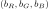
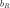
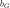

Definition
A composite

displays band
in red,
in green, in blue, each through its own stretch (LUT).- True colour: (red, green, blue): as the eye would see, with haze in the blue.
- Colour infrared (NIR, red, green): healthy vegetation red, urban areas cyan-grey, water dark blue-black, bare soil brown.
- SWIR composites (SWIR2, NIR, red or SWIR, NIR, green): burn scars, moisture, geology, snow (dark in SWIR) vs cloud (bright).
- SAR: multi-polarization (VV, VH, VV/VH) or multi-temporal (date 1, date 2, date 1) composites show change as colour.
Example
def stretch(b):
lo, hi = np.percentile(b, [2, 98])
return np.clip((b - lo) / (hi - lo), 0, 1)
# Sentinel-2 B8, B4, B3
cir = np.dstack([stretch(nir), stretch(red), stretch(green)])
plt.imshow(cir)Intuition
False colour translates invisible wavelengths into visible colours, so the eye can use its excellent pattern recognition on information it cannot see.
Pitfall
Colours in a false-colour image are not physical colours; interpretation requires knowing which band is in which channel and how each was stretched.